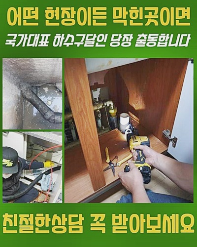
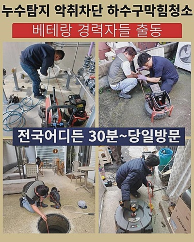
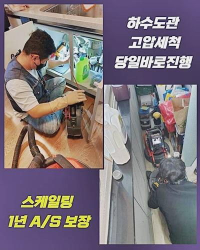
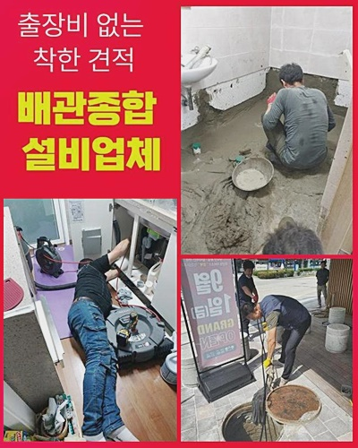
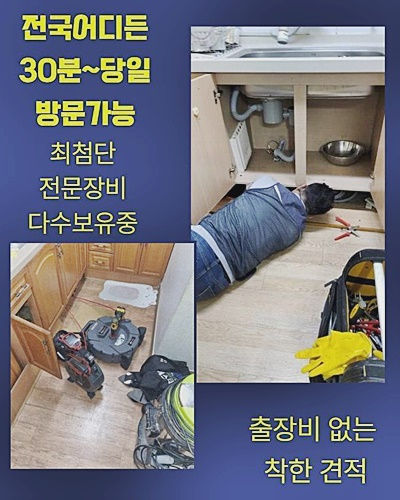
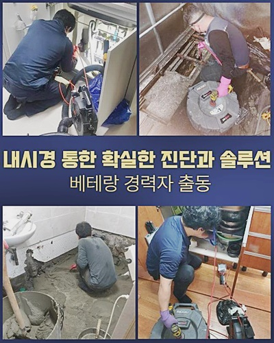
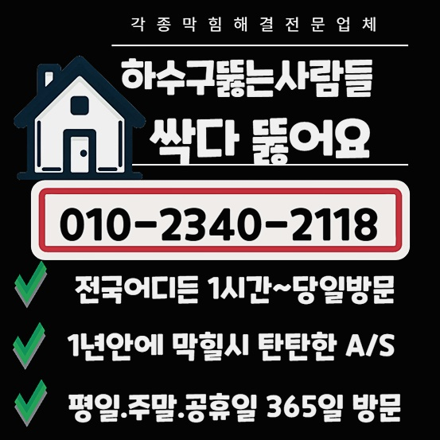

🏠 종로 신문로1가욕실뚫음 익선동 배관내시경카메라 물샘전문업체
용인 싱크대막힘 전문 시공 후기

📋 작업 개요
- 위치: 용인
- 서비스 유형: 싱크대막힘, 변기막힘, 하수구막힘, 배관막힘, 맨홀막힘, 누수수리, 역류해결, 뚫는업체, 배관청소, 고압세척, 설비공사, 배관보수
- 작업 일시: 2024. 7. 18. 10:27
- 업체명: 하수구수사대 (010-5615-2118)
🔍 문제 상황
종로 신문로1가욕실뚫음 익선동 배관내시경카메라 물샘전문업체
안녕하십니까 배수관 클리닝은 간단하게 약품을 넣는다고 소멸이 어렵다고 볼 수 있고요
예측과 달리 까다롭고 거추장스러운 과정이 많기 때문에 무엇으로 이러한 형태로 되었는지 이유를 명확히 검진하고 그에 적합한 방안을 설계하여 처리해내는 게 선결적 업무랍니다
작은 부분의 소제를 시행했다 하여도 타 지점에서 막히는 바람에 금방 공사를 시행해야 하기도 하죠
그래서 현 장애만 처치하는 선에서 마감짓지 말고 전체적 구조를 면밀하게 검진하여 내부에 체류하는 찌꺼기들을 없애야 추가 문제가 발현되지 않게 되죠
마땅히 거주자분들도 유지보수에 신경써야 합니다
말씀드릴 곳은 급작스러운 고장이 발생하여 저희팀의 후기글을 읽어 보시고 문제를 타파해달라는 요청하셔서 출장하게 되었죠
막힘과 누수가 무슨 인과관계가 있느냐 궁금할 수 있겠으나 이번 글을 보면 납득할만 하시다는 것을 인지하실 수 있을 것입니다
상부는 거주지이며 최하층은 커피숍 등이 자리잡은 최근에 많이 보이는 건물이었죠
맨홀 뚜껑을 열면 오수관 및 주 하수관이 붙어 있는데 일부가 정체가 발생되 역류증상이 보였고 결국 중심부의 거주지로 전이되어서 중대한 상황이었죠
요즘 심심치않게 하층은 일반 식당으로 위층부터는 거주지로 건축된 것을 목격할 때가 빈번한데 보는 것과 같이 관리 부족으로 인해 말썽거리가 출몰하는 형국이 많아요

🔎 원인 분석
💡 전문가 진단: 정밀 진단 장비를 사용하여 슬러지의 고착 여부를 판명하고 타격/세척 작업을 실시했습니다.
물이 새나가는 일로 인해 환경이 매우 더러워져 있었고 처치하려 재빠르게 수선하기로 결정했어요
일단 막힘증세 해결을 위해서 맨홀 내부의 시설물을 전반적으로 조사하고 1층부터 꼭대기까지 거주 중인 구성원들의 처소 안으로 진입하여 파이프 이상 여부를 대략적으로 조사해 봤더니 특별한 트러블은 없었어요
그렇긴 하여도 거주중이신 분들이나 매장 주인분에게 문제점이 없다라고 확신할 수는 없어요
일상 가운데 무분별하게 쓰레기를 처리한 게 내측이 아니고 바깥쪽에서 물이 넘쳐난 것인데요
그리하다면 누수문제가 생겨나는 까닭은 어느쪽에서 발견할 수 있을까요 그것은 바로 침전물입니다
당연히 파이프가 노화되며 균열을 일으키기도 하지만 보는 바와 같이 찌꺼기들이 적체되어 하수구가 부풀기도 하고 줄어들기도 하면서 관자체가 약화되고 그런 다음엔 균탁이 나타날 수 있답니다
근래에는 홀로 사는 세대원들이 많아지다 보니 소형 빌라에 사는 케이스가 무수한데요
그 뒤엔 이와 같은 일로 괴로움에 처하시는 건물주사람들이 꽤 됩니다
그게 왜 같이 일어나느냐 말하시는 분들도 있겠지만 홀로 거주하는 경우에 능숙하게 생활을 하시는 경우도 있지만 무책임하게 이용하는 개인도 많아요
아무 물건이나 배수 파이프로 내버리거나 변기로 넣어버리는 사태가 많이 목격됩니다
그래서 해당 문제점이 이전과 비교하여서 커지고 있어요
일반 아파트 건물도 배관막힘이 발발하는 것은 마찬가지이지만 세대원이 다수이고 관리사무소가 있어 이런 처소들과 같이 빈빈하게 발발하지는 않아요

🔧 작업 과정
앞서 맨홀을 열어서 다량으로 적체된 침전물들을 처리했습니다
고압세정 업무를 시행하려 작업 차량을 지점 근접한 위치로 옮겨 고압청소 장비를 안쪽으로 집어넣어 찌꺼기를 처리했습니다
고온 세정은 80도에 육박하는 액체를 쓰고 수압을 올려서 그 힘을 바탕으로 내측의 노폐물들을 없애는 것입니다
이번 장애가 발발한 위치와 같이 바깥의 처소에서 막힘이나 누수증상이 생겨나 버릴 때에 적절하게 쓰는 방책이랍니다
세척에 요망되는 고온의 수돗물은 저희 작업차량 안에서 보급되므로 별도 준비에 대한 우려는 안 하셔도 됩니다
수회 세척을 하며 결과적으로 막힌 기름기와 정체를 일으켰던 주된 이유가 되었던 보습 티슈를 전부 제거했죠
습윤티슈 같은 경우엔 보통의 종이 성분과 달리 녹아 없어지지 않고 플라스틱과 같은 것들을 토대로 만들어진 것들이므로 용변 후 같이 버리면 고장이 생길 수 있어서 필수적으로 쓰레기통에 분리하여 처리해야 합니다
그렇게 하지 않는다면 지금처럼 말썽이 생기게 되며 막힘으로 최종적으로 배관 파열이 생기거나 주변 세대에도 해를 입히게 된답니다
실제 이와 같은 말썽으로 나라에서는 매년 세척 시기를 정하고 전문인을 모집해 노후화된 배수관 내측에 거류하는 슬러지를 청소하는 시공을 실시하고 있는 상황이죠
이와 같이 국가적 낭비의 메인 원인으로 작용하고 있으므로 필수적으로 정리해서 생활하시길 부탁하며 무책임하게 버리는 일이 반복되면 간소하게 물막힘 등으로 종결되지 않으며 화장실 변기나 싱크대 등이 망가지게 되면서 생활에 막대한 피해를 입으실 수 있어요
배관 카메라를 넣어서 샅샅이 살피며 고착화된 노폐물 등이 상존하는지 지켜보았어요
일이 잘 되어서 깔끔하게 처리되었답니다 의뢰인도 이 모습을 보셨고 추후 사용을 올바르게 하실 것을 알려드렸죠
가끔 고장난 부분이 또 말썽이라 하소연하시는 경우는 전 배관을 클리닝하지 않아서예요
지금처럼 정체가 발발했을 시 그 부분의 상태의 종료에만 힘쓸게 아닌 전 구간을 뚫는다면 재차 막혀버리는 상황이 발현되지 않게 되죠
마땅히 거주하시는 거주자분들도 깨끗하게 보존해야 한답니다
일상적으로 쉽게 습득할 수 있는 유지 방책으로 덩어리가 큰 찌꺼기가 파이프로 투입되지 않도록 거름망을 설비할 수가 있습니다
기초적인 것이긴 하지만 최근에 출장갔던 처소에서는 이러한 일차원적인 사안들마저 내팽개쳐버리시는 의뢰자도 있으셨답니다
귀찮은 마음에 마음대로 처분하면 얼마 못가 불편한 상황이 다시 일어날 수 있죠
다른 곳에도 손실을 주었으니 살수기를 통해서 정돈하였습니다


✅ 작업 완료
막힘을 뚫는 부분이 중요하나 이후 정리정돈도 긴요하다는 점이 저희의 기본 방침입니다
단지 통수 트러블만 소멸시키는 것에서 끝나지 않으며 사후 클리닝도 병행하니 의뢰하신다면 조속히 바라시는 모양으로 고치겠습니다
저희들은 침전물의 유형이나 기타 현황을 계산하지 않으며 해결이 필요하다면 즉시 방문하여 조력해 드립니다
이에 어느 때라도 우리팀을 불러 시공하고 있으시면 전화만 주시면 돼요
하수관 내측의 찌꺼기는 단순하게 누적되기만 하지 않으며 썩은 냄새가 올라오기도 하고 배관 자체를 망가뜨리기에 지속적인 유지보수를 시행하는 것이 안전하고 이것이 힘들다면 평상시 정체가 발생하지 않도록 사용하실 것을 권장합니다




⚠️ 베란다 누수 및 방수 관리 방법
- ✅ 비가 많이 올 때 창틀 주변이나 아래층 천장에 얼룩이 생기는지 정기적으로 확인해 보세요.
- ✅ 우수관 주변 실리콘 마감이 들뜨거나 깨진 틈새가 있는지 손상 여부를 수시로 체크하세요.
- ✅ 베란다 바닥 타일의 줄눈(메지)이 소실되면 그 틈으로 물이 침투하여 누수가 유발됩니다.
- ✅ 누수 의심 증상 발견 시 방치하면 아래층 손실이 커지므로 즉시 전문가의 진단을 받으십시오.
💡 핵심 정리
- 확실한 장비 작업(내시경 점검 및 샤프트 스케일링)으로 원인을 뿌리 뽑습니다.
- 작업 후 1년 이내에 동일한 부위 재발 시 100% 무상 A/S 서비스를 보장합니다.
- 서울 · 경기 · 인천 전 지역에 24시간 언제든 긴급 출동할 수 있도록 항시 대기 중입니다.
❓ 자주 묻는 질문 (FAQ)
🚨 용인 싱크대막힘 문제로 고민이신가요?
정확한 원인 진단과 확실한 시공으로 재발 없는 해결을 약속드립니다.
24시간 긴급 출동 | 서울 · 경기 · 인천 전지역 | 1년 내 재발 시 무상 A/S